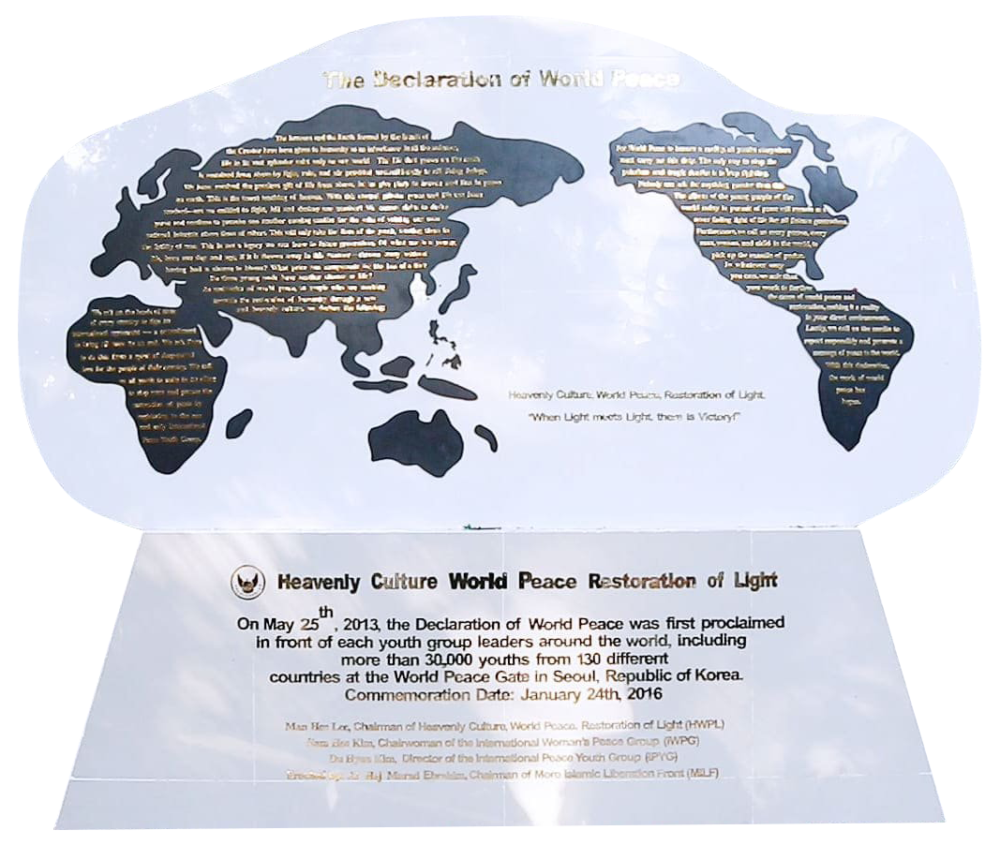

Бид бол 2013 оны 5-р сарын 25-нд тунхаглагдсан Дэлхийн энх тайвны тунхаглалын үзэл санааны үндсэн дээр байгуулагдсан Олон улсын залуучуудын энх тайвны нийгэмлэг (IPYG). Дэлхий дахинд 48 орны 50 байршилд салбартай бөгөөд DPCW тунхаглалын “Энх тайвны соёлыг түгээх” буюу 10-р бүлгийн хүрээнд үйл ажиллагаагаа зохион байгуулдаг.

Дайныг зогсоож, энх тайвныг тогтоох тунхаглал DPCW
2016 оны 3 сарын 14-ний өдөр HWPL байгууллага 15 орны олон улсын мэргэжлийн хуульчдын бүрэлдэхүүнтэйгээр “Дайныг зогсоож, Энх тайвныг тогтоох тунхаглал” (DPCW)-ыг боловсруулж тунхагласан. 10 бүлэг, 38 зүйлээс бүрдсэн энэхүү тунхаглалын гол зорилго бол НҮБ-ыг анх үүсгэн байгуулахад үндэс суурь нь болсон мөн чанарыг сэргээж, дэлхийд баримталж буй нийтлэг үнэ цэнийг хөгжүүлэх замаар тогтвортой энх тайвныг бий болгоход оршино. DPCW тунхаглал нь зөрчилдөөнөөс урьдчилан сэргийлэх, шийдвэрлэх, амар тайван нийгмийг тогтвортой сахин хамгаалах зарчим, арга барилыг агуулсан байдаг.
Яагаад заавал залуучууд гэж?
НҮБ-ын хүн амын тоон үзүүлэлтээс харвал 2024 оны байдлаар дэлхийн хүн амын 30 хувь буюу 2.4 тэрбум хүн нь 16-38 насныхан байдаг. Иймд залуучуудын хандлагыг сайжруулж, оролцоог нэмэгдүүлэх нь өнөөдөр бидний зайлшгүй анхааран, санаа тавих ёстой асуудал юм.
Яагаад энх тайван чухал вэ?
Хэрвээ дайн дэгдвэл залуучууд хамгийн түрүүнд татагдана. Тиймээс энх тайван бүрэн тогтоогүй цагт хэний ч амьдрал баталгаатай биш юм. Миний эрх бусдын эрхээр хязгаарлагдаж буй энэ цагт бид өөрсдийн болон бусдын хөгжих боломжийн төлөө, амар тайван нийгмийг цогцлоохын төлөөх амьдралын суурь баталгааг бий болгож байгаа юм.
Бидний зорилго
Бид дэлхий дахин дахь залуусыг IPYG нийгэмлэгтэй хамтран амар тайван нийгмийг цогцлооход хувь нэмрээ оруулахыг уриалж, залуучуудын хариуцлагатай, идэвхтэй оролцоог нэмэгдүүлэхийг зорьж байна.
- - Нийгмийн эв нэгдлийг бий болгох
- - Залуучуудыг чадавхжуулан нийгэмд эерэг өөрчлөлт авчрах
- - Нийгмийн асуудалд хамтдаа гарц шийдлийг хайдаг хамтын нийгэмлэгийг бүтээх